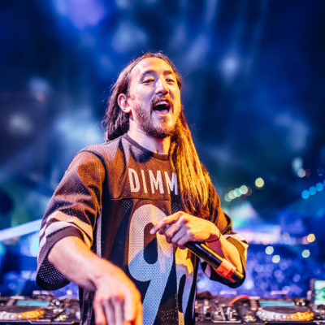

Steve Aoki
Steven Hiroyuki Aoki (Miami, 30 de noviembre de 1977) más conocido como Steve Aoki, es un DJ y productor estadounidense de EDM y fundador del sello discográfico Dim Mak Records. Actualmente, ocupa el puesto n.° 9 entre los 10 mejores DJ del mundo, según la encuesta anual que realiza la revista DJ Magazine.
Steve Hiroyuki Aoki nació en Miami y se crió en Newport Beach (California). Se graduó de la Newport Harbor High School en 1995, fue un jugador estrella en el equipo universitario de badminton. Su padre es Hiroaki "Rocky" Aoki, japonés nacido en Tokio y su madre, Kobayashi Chizuru. Su padre era un antiguo luchador de lucha libre, quien también fundó la cadena de restaurantes Benihana.
Él tiene dos hermanos mayores, Kana (que ahora es conocida como "Grace"), y Kevin (dueño del restaurante Sushi Doraku). También cuenta con tres medio hermanos, todos los cuales son menores: Kyle, Echo y Devon Aoki, la supermodelo y actriz. Cuando era niño, Steve vivía con su abuelo, su madre y sus dos hermanos mayores.
Marshmello

Marshmello es un DJ y productor de EDM de los géneros future bass y trap. Comenzó a ganar notoriedad internacional gracias a sus remixes de canciones de Jack Ü y Zedd, entre otros. Su canción «Alone» alcanzó el Billboard Hot 100. Ha colaborado junto a artistas como Ookay, Jauz, Slushii, Omar Linx y Selena Gómez. Marshmello lleva una máscara en sus apariencias públicas. Su identidad es desconocida, si bien frecuentemente se especula con que podría ser el DJ estadounidense Chris Comstock, más conocido por su nombre artístico, Dotcom, cuyo estilo es similar al de Marshmello, a lo que hay que sumar varias coincidencias, como que tienen el mismo agente y que supuestamente comparten mismos tatuajes y día de cumpleaños. En una entrevista, Skrillex se refirió a Marshmello como «Chris» cuando este le llamó en medio de la entrevista.
A pesar de su anonimato, ha recibido numerosos reconocimientos internacionales en su breve carrera, iniciada en 2015. Su personaje de DJ enmascarado está inspirado en otros como Deadmau5, Cazzette, o Daft Punk;5 esta condición, su vestuario y escenografía, además de recurrentes «trucos publicitarios», como cuando el DJ Tiësto apareció disfrazado de Marshmello, también han contribuido a su éxito mediático.